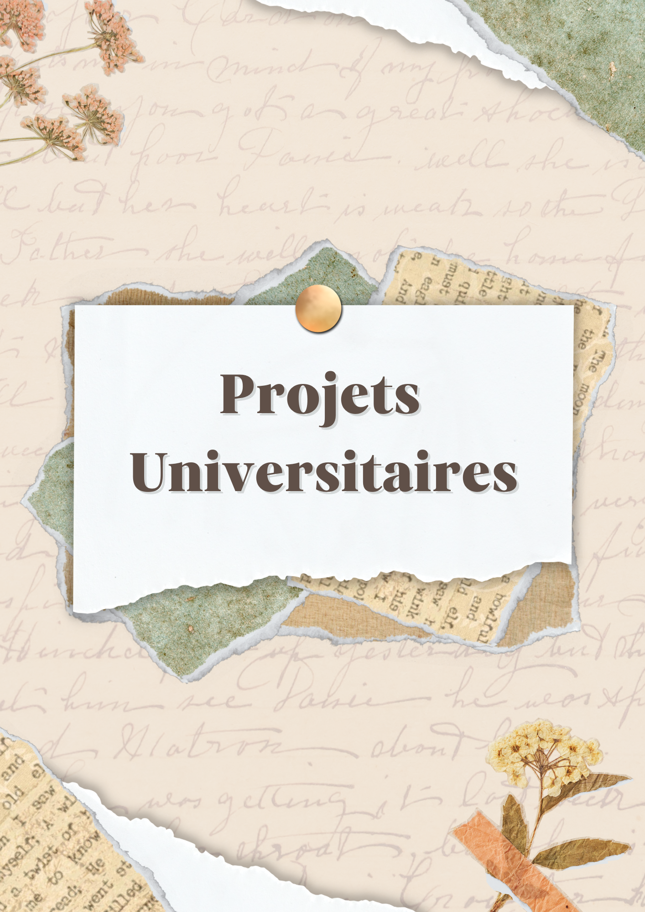

Communication · Stage & Service Civique
Futsal Drancy
Création de supports visuels, gestion des réseaux sociaux et communication événementielle pour le club de Futsal Drancy.
Voir le projet →
BTS Communication & Universitaire
Projets académiques
BTS Communication, Alda, Sans Bavure — mes projets de formation.
Voir les projets →
Créations personnelles
Projets créatifs personnels
Explorations graphiques et créations en dehors du cursus scolaire.
Voir le projet →